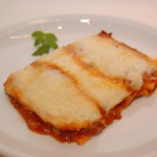

Lasagna

Description
Lasagna is a classic Italian dish made by layering sheets of pasta with rich meat or vegetable sauce, creamy béchamel, and melted cheese. Baked to perfection, it features a comforting blend of flavors and textures—tender pasta, savory fillings, and a golden, bubbling top. Often enjoyed as a hearty main course, lasagna is beloved for its satisfying, home-cooked appeal.
Ingredients
- 1 pound sweet Italian sausage
- ¾ pound lean ground beef
- ½ cup minced onion
- 2 cloves garlic, crushed
- 1 (28 ounce) can crushed tomatoes
- 2 (6.5 ounce) cans canned tomato sauce
- 2 (6 ounce) cans tomato paste
- ½ cup water
- 2 tablespoons white sugar
- 4 tablespoons chopped fresh parsley, divided
- 1 ½ teaspoons dried basil leaves
- 1 ½ teaspoons salt, divided, or to taste
- 1 teaspoon Italian seasoning
- ½ teaspoon fennel seeds
- ¼ teaspoon ground black pepper
- 12 lasagna noodles
- 16 ounces ricotta cheese
- 1 egg
- ¾ pound mozzarella cheese, sliced
- ¾ cup grated Parmesan cheese
Steps
- Make the meat sauce.
- Cook the noodles.
- Make the ricotta mixture.
- Layer the lasagna according to the recipe instructions.
- Cover with foil and bake.
- Let the lasagna rest before serving.
Home